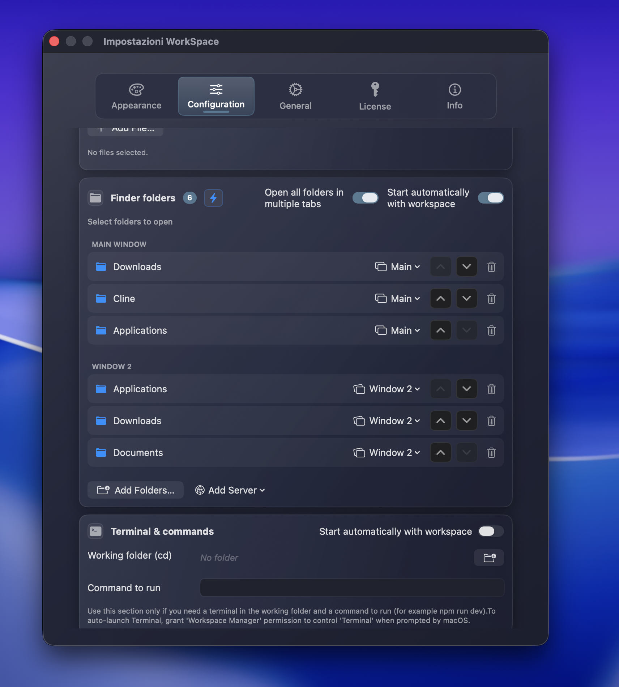

1 / 5
Avvia app, siti, file e cartelle come un unico ambiente di lavoro. Ogni progetto torna con il suo contesto, senza cercare tutto da capo.
Richiede macOS Sonoma o superiore

Non è solo “aprire app”: è ritrovare subito cartelle, siti, strumenti e stato mentale del progetto giusto.
Prima
Cerchi la cartella corretta tra progetto, documenti e download.
Riapri dashboard, email, task board e siti uno alla volta.
Ogni cambio progetto diventa una piccola interruzione ripetuta.
Dopo
La 2.0.6 porta ordine reale nelle cartelle: tab, gruppi, sequenza stabile e una configurazione che resta esattamente come l’hai pensata.
Unificati i percorsi: nessuna distinzione tra cartelle principali e secondarie per una linearità totale.
Crea gruppi di finestre Finder personalizzati. Decidi quali cartelle aprire come tab e quali in finestre separate.
Le cartelle si aprono esattamente nell'ordine in cui le vedi. Massimo controllo sul setup.
Nuovo motore di salvataggio: le tue configurazioni sono al sicuro e non verranno mai perse al riavvio.
Le funzioni non sono una lista: lavorano insieme per trasformare ogni progetto in un ambiente pronto, ordinato e sicuro.
Cartelle unificate, ordine di apertura deterministico e raggruppamento intelligente in tab e finestre multiple.
Proteggi l'accesso ai tuoi progetti. Sblocca l'app istantaneamente con la tua impronta digitale.
Aggiornamenti automatici rapidi e sicuri. Mantenere l'app aggiornata è ora semplicissimo.
Controlla tutto dalla barra dei menu. Ora completamente riscritta per consumare ancora meno RAM.

Meno attrito, più controllo quotidiano.
Tieni solo l'icona nel Menu Bar. Attivabile da Impostazioni → Generali. Solo Pro.
Chiude solo le app aperte da quel workspace. Session-based: non tocca nulla che avevi già aperto.
Interfaccia completa in Italiano e Inglese (EN/IT) selezionabile.
Scegli tra tema Light, Dark o sincronizza automaticamente con macOS.
Esporta i tuoi workspace in JSON e ripristinali ovunque in un attimo.
Richiama i tuoi work preferiti direttamente da tastiera.
Presentazione al primo avvio per imparare subito le funzioni (rivedibile).
Imposta un workspace di default per un accesso ancora più rapido.
Pulisci tutta la configurazione e riparti da zero con un click.
Dalla dashboard al Menu Bar, ogni schermata è pensata per farti arrivare al lavoro giusto senza attrito.
Il centro di controllo dove scegli un contesto e avvii tutto quello che ti serve.
Clicca per ingrandire
Tab, gruppi e ordine stabile


Controlli chiari per il comportamento dell'app.

Tema chiaro, scuro o sincronizzato con macOS.

Messaggi utili quando serve un permesso o un'azione.
Ogni immagine si apre in overlay, con navigazione da tastiera e zoom.
WorkSpace Manager è firmato con Apple Developer ID e notarizzato da Apple. Nessun installer invasivo: scarichi, trascini in Applicazioni e avvii.
Scarica l'ultima versione certificata dal rilascio ufficiale GitHub.
Sposti l'app nella cartella Applicazioni. Non vengono installati helper nascosti o componenti invasivi.
macOS verifica firma e notarizzazione Apple prima dell'apertura. Tu parti da un'app controllata e riconosciuta.
Scarica subito l'app completa per provarla sul tuo Mac. La licenza Pro sblocca i flussi avanzati per chi usa WorkSpace Manager ogni giorno.
Perfetto per iniziare, creare i primi workspace e capire quanto tempo risparmi.
v2.0.6 • macOS Sonoma+
Per chi vuole aprire, proteggere e chiudere interi contesti di lavoro senza limiti.
Scrivimi dal canale più comodo. Per bug tecnici GitHub è ideale; per domande su licenza, installazione o Pro, meglio email.
Assolutamente. WorkSpace Manager è firmata digitalmente con un Apple Developer ID e autenticata da Apple per garantire l'assenza di malware.
Le app sull'App Store sono chiuse in una sandbox. Per aprire file, cartelle e gestire finestre in modo utile, WorkSpace Manager necessita di permessi di sistema che lo Store limita.
No. La licenza Lifetime è un acquisto unico: paghi una volta e usi la versione 2.x senza abbonamento.
Una singola licenza personale permette l'attivazione su 2 Mac, ad esempio desktop e portatile.